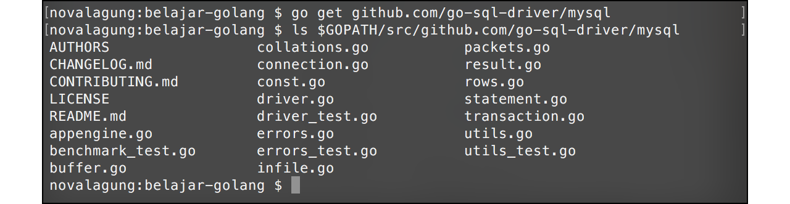
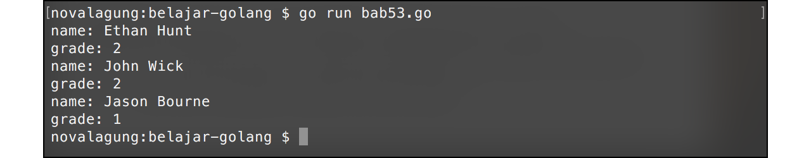

A.53. SQL
Go menyediakan package database/sql berisikan generic interface untuk keperluan interaksi dengan database sql. Package ini hanya bisa digunakan ketika driver database engine yang dipilih juga ada.
Ada cukup banyak sql driver yang tersedia untuk Go, detailnya bisa diakses di https://github.com/golang/go/wiki/SQLDrivers. Beberapa diantaranya:
- MySql
- Oracle
- MS Sql Server
- dan lainnya
Driver-driver tersebut merupakan project open source yang diinisiasi oleh komunitas di Github. Artinya kita selaku developer juga bisa ikut berkontribusi didalamnya.
Pada bab ini kita akan belajar bagaimana berkomunikasi dengan database MySQL menggunakan driver Go MySQL Driver.
A.53.1. Instalasi Driver
Unduh driver mysql menggunakan go get.
cd <folder-project>
go get github.com/go-sql-driver/mysql

A.53.2. Setup Database
Sebelumnya pastikan sudah ada mysql server yang terinstal di lokal anda.
Buat database baru bernama db_belajar_golang, dan tabel baru bernama tb_student.
CREATE TABLE IF NOT EXISTS `tb_student` (
`id` varchar(5) NOT NULL,
`name` varchar(255) NOT NULL,
`age` int(11) NOT NULL,
`grade` int(11) NOT NULL
) ENGINE=InnoDB DEFAULT CHARSET=latin1;
INSERT INTO `tb_student` (`id`, `name`, `age`, `grade`) VALUES
('B001', 'Jason Bourne', 29, 1),
('B002', 'James Bond', 27, 1),
('E001', 'Ethan Hunt', 27, 2),
('W001', 'John Wick', 28, 2);
ALTER TABLE `tb_student` ADD PRIMARY KEY (`id`);
A.53.3. Membaca Data Dari MySQL Server
Import package yang dibutuhkan, lalu disiapkan struct dengan skema yang sama seperti pada tabel tb_student di database. Nantinya struct ini digunakan sebagai tipe data penampung hasil query.
package main
import "fmt"
import "database/sql"
import _ "github.com/go-sql-driver/mysql"
type student struct {
id string
name string
age int
grade int
}
Driver database yang digunakan perlu di-import menggunakan tanda _, karena meskipun dibutuhkan oleh package database/sql, kita tidak langsung berinteraksi dengan driver tersebut.
Selanjutnya buat fungsi untuk koneksi ke database.
func connect() (*sql.DB, error) {
db, err := sql.Open("mysql", "root:@tcp(127.0.0.1:3306)/db_belajar_golang")
if err != nil {
return nil, err
}
return db, nil
}
Fungsi sql.Open() digunakan untuk memulai koneksi dengan database. Fungsi tersebut memiliki 2 parameter mandatory, nama driver dan connection string.
Skema connection string untuk driver mysql yang kita gunakan cukup unik, root@tcp(127.0.0.1:3306)/db_belajar_golang. Dibawah ini merupakan skema connection string yang bisa digunakan pada driver Go MySQL Driver. Jika anda menggunakan driver mysql lain, skema koneksinya bisa saja berbeda tergantung driver yang digunakan.
user:password@tcp(host:port)/dbname
user@tcp(host:port)/dbname
Di bawah ini adalah penjelasan mengenai connection string yang digunakan pada fungsi connect().
root@tcp(127.0.0.1:3306)/db_belajar_golang
// user => root
// password =>
// host => 127.0.0.1 atau localhost
// port => 3306
// dbname => db_belajar_golang
Setelah fungsi untuk konektivitas dengan database sudah dibuat, saatnya untuk mempraktekan proses pembacaan data dari server database. Siapkan fungsi sqlQuery() dengan isi adalah kode berikut.
func sqlQuery() {
db, err := connect()
if err != nil {
fmt.Println(err.Error())
return
}
defer db.Close()
var age = 27
rows, err := db.Query("select id, name, grade from tb_student where age = ?", age)
if err != nil {
fmt.Println(err.Error())
return
}
defer rows.Close()
var result []student
for rows.Next() {
var each = student{}
var err = rows.Scan(&each.id, &each.name, &each.grade)
if err != nil {
fmt.Println(err.Error())
return
}
result = append(result, each)
}
if err = rows.Err(); err != nil {
fmt.Println(err.Error())
return
}
for _, each := range result {
fmt.Println(each.name)
}
}
Setiap kali terbuat koneksi baru, jangan lupa untuk selalu close instance koneksinya. Bisa menggunakan keyword defer seperti pada kode di atas, defer db.Close().
Fungsi db.Query() digunakan untuk eksekusi sql query. Fungsi tersebut parameter keduanya adalah variadic, sehingga boleh tidak diisi. Pada kode di atas bisa dilihat bahwa nilai salah satu clause where adalah tanda tanya (?). Tanda tersebut kemudian akan ter-replace oleh nilai pada parameter setelahnya (nilai variabel age). Teknik penulisan query sejenis ini sangat dianjurkan, untuk mencegah sql injection.
Fungsi tersebut menghasilkan instance bertipe sql.*Rows, yang juga perlu di close ketika sudah tidak digunakan (defer rows.Close()).
Selanjutnya, sebuah array dengan tipe elemen struct student disiapkan dengan nama result. Nantinya hasil query akan ditampung ke variabel tersebut.
Kemudian dilakukan perulangan dengan acuan kondisi adalah rows.Next(). Perulangan dengan cara ini dilakukan sebanyak jumlah total record yang ada, berurutan dari record pertama hingga akhir, satu per satu.
Method Scan() milik sql.Rows berfungsi untuk mengambil nilai record yang sedang diiterasi, untuk disimpan pada variabel pointer. Variabel yang digunakan untuk menyimpan field-field record dituliskan berurutan sebagai parameter variadic, sesuai dengan field yang di select pada query. Silakan lihat perbandingan dibawah ini unuk lebih jelasnya.
// query
select id, name, grade ...
// scan
rows.Scan(&each.id, &each.name, &each.grade ...
Data record yang didapat kemudian di-append ke slice result, lewat statement result = append(result, each).
OK, sekarang tinggal panggil fungsi sqlQuery() di main, lalu jalankan program.
func main() {
sqlQuery()
}
Output:
A.53.4. Membaca 1 Record Data Menggunakan Method QueryRow()
Untuk query yang menghasilkan 1 baris record saja, bisa gunakan method QueryRow(), dengan metode ini kode menjadi lebih ringkas. Chain dengan method Scan() untuk mendapatkan value-nya.
func sqlQueryRow() {
var db, err = connect()
if err != nil {
fmt.Println(err.Error())
return
}
defer db.Close()
var result = student{}
var id = "E001"
err = db.
QueryRow("select name, grade from tb_student where id = ?", id).
Scan(&result.name, &result.grade)
if err != nil {
fmt.Println(err.Error())
return
}
fmt.Printf("name: %s\ngrade: %d\n", result.name, result.grade)
}
func main() {
sqlQueryRow()
}
Dari kode di atas ada statement yang dituliskan cukup unik, chain statement boleh dituliskan dalam beberapa baris, contohnya:
err = db.
QueryRow("select name, grade from tb_student where id = ?", id).
Scan(&result.name, &result.grade)
Sekarang jalankan program. Outputnya akan muncul data record sesuai id.
A.53.5. Eksekusi Query Menggunakan Prepare()
Teknik prepared statement adalah teknik penulisan query di awal dengan kelebihan bisa di re-use atau digunakan banyak kali untuk eksekusi yang berbeda-beda.
Metode ini bisa digabung dengan Query() maupun QueryRow(). Berikut merupakan contoh penerapannya.
func sqlPrepare() {
db, err := connect()
if err != nil {
fmt.Println(err.Error())
return
}
defer db.Close()
stmt, err := db.Prepare("select name, grade from tb_student where id = ?")
if err != nil {
fmt.Println(err.Error())
return
}
var result1 = student{}
stmt.QueryRow("E001").Scan(&result1.name, &result1.grade)
fmt.Printf("name: %s\ngrade: %d\n", result1.name, result1.grade)
var result2 = student{}
stmt.QueryRow("W001").Scan(&result2.name, &result2.grade)
fmt.Printf("name: %s\ngrade: %d\n", result2.name, result2.grade)
var result3 = student{}
stmt.QueryRow("B001").Scan(&result3.name, &result3.grade)
fmt.Printf("name: %s\ngrade: %d\n", result3.name, result3.grade)
}
func main() {
sqlPrepare()
}
Method Prepare() digunakan untuk deklarasi query, yang mengembalikan objek bertipe sql.*Stmt. Dari objek tersebut, dipanggil method QueryRow() beberapa kali dengan isi value untuk id berbeda-beda untuk tiap pemanggilannya.

A.53.6. Insert, Update, & Delete Data Menggunakan Exec()
Untuk operasi insert, update, dan delete; dianjurkan untuk tidak menggunakan fungsi sql.Query() ataupun sql.QueryRow() untuk eksekusinya. Direkomendasikan eksekusi perintah-perintah tersebut lewat fungsi Exec(), contohnya seperti pada kode berikut.
func sqlExec() {
db, err := connect()
if err != nil {
fmt.Println(err.Error())
return
}
defer db.Close()
_, err = db.Exec("insert into tb_student values (?, ?, ?, ?)", "G001", "Galahad", 29, 2)
if err != nil {
fmt.Println(err.Error())
return
}
fmt.Println("insert success!")
_, err = db.Exec("update tb_student set age = ? where id = ?", 28, "G001")
if err != nil {
fmt.Println(err.Error())
return
}
fmt.Println("update success!")
_, err = db.Exec("delete from tb_student where id = ?", "G001")
if err != nil {
fmt.Println(err.Error())
return
}
fmt.Println("delete success!")
}
func main() {
sqlExec()
}
Teknik prepared statement juga bisa digunakan pada metode ini. Berikut adalah perbandingan eksekusi Exec() menggunakan Prepare() dan cara biasa.
// menggunakan metode prepared statement
stmt, err := db.Prepare("insert into tb_student values (?, ?, ?, ?)")
stmt.Exec("G001", "Galahad", 29, 2)
// menggunakan metode biasa
_, err := db.Exec("insert into tb_student values (?, ?, ?, ?)", "G001", "Galahad", 29, 2)
A.53.7. Koneksi Dengan Engine Database Lain
Karena package database/sql merupakan interface generic, maka cara untuk koneksi ke engine database lain (semisal Oracle, Postgres, SQL Server) adalah sama dengan cara koneksi ke MySQL. Cukup dengan meng-import driver yang digunakan, lalu mengganti nama driver pada saat pembuatan koneksi baru.
sql.Open(driverName, connectionString)
Sebagai contoh saya menggunakan driver pq untuk koneksi ke server Postgres, maka connection string-nya:
sql.Open("pq", "user=postgres password=secret dbname=test sslmode=disable")
Selengkapya mengenai driver yang tersedia bisa dilihat di https://github.com/golang/go/wiki/SQLDrivers.
- Go MySQL Driver, by Julien Schmidt, MPL-2.0 license